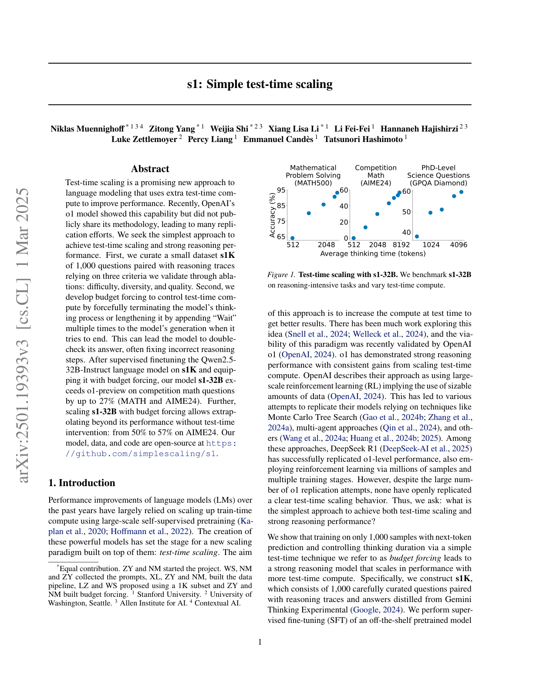
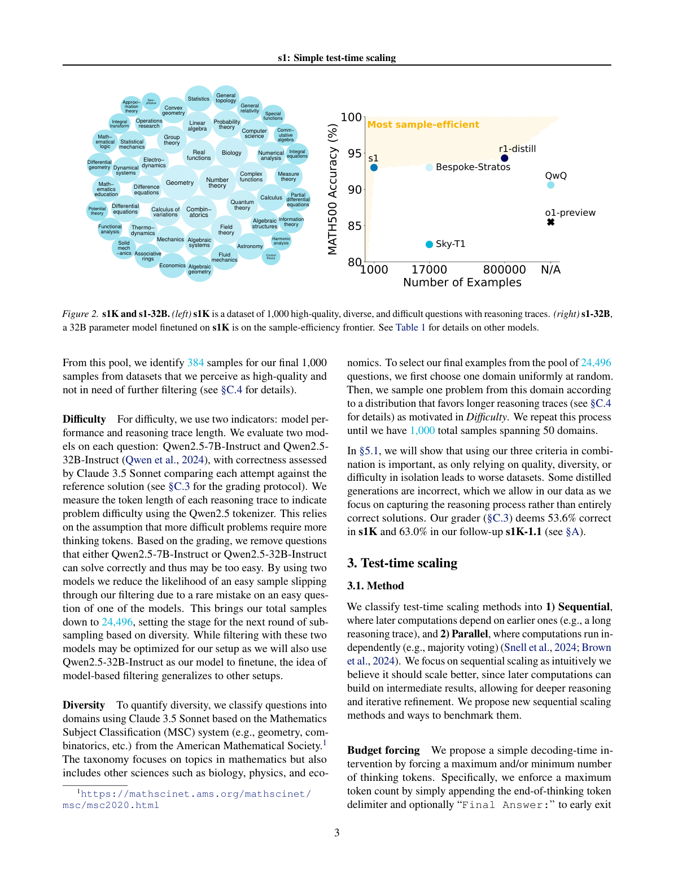
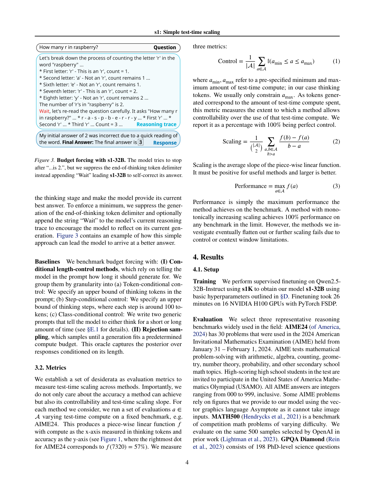
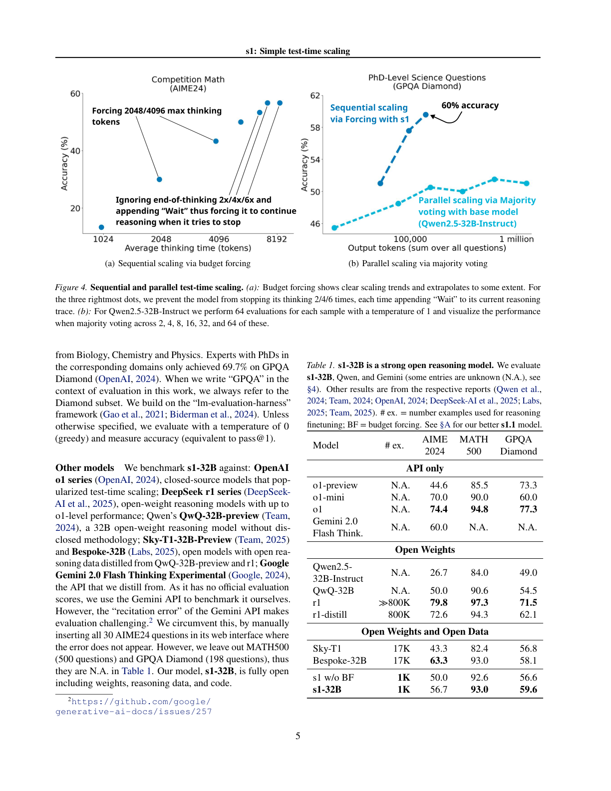
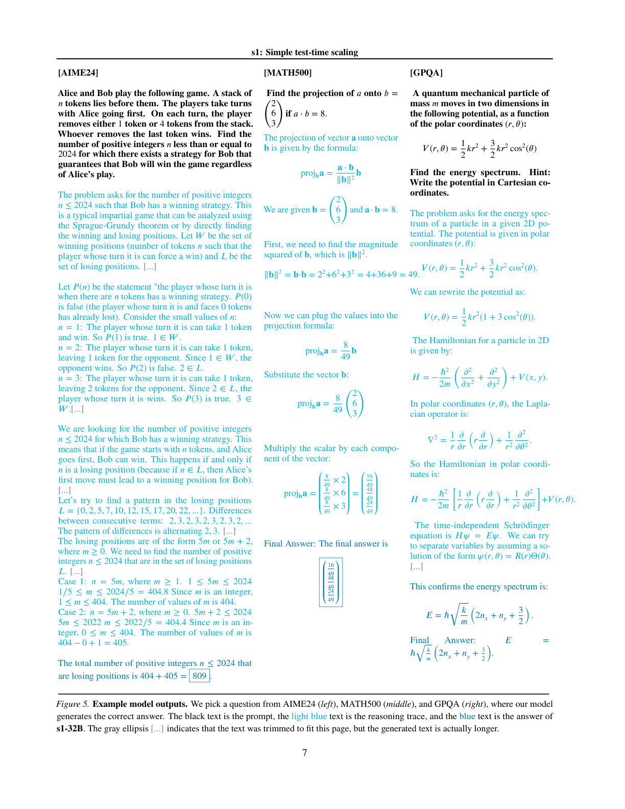
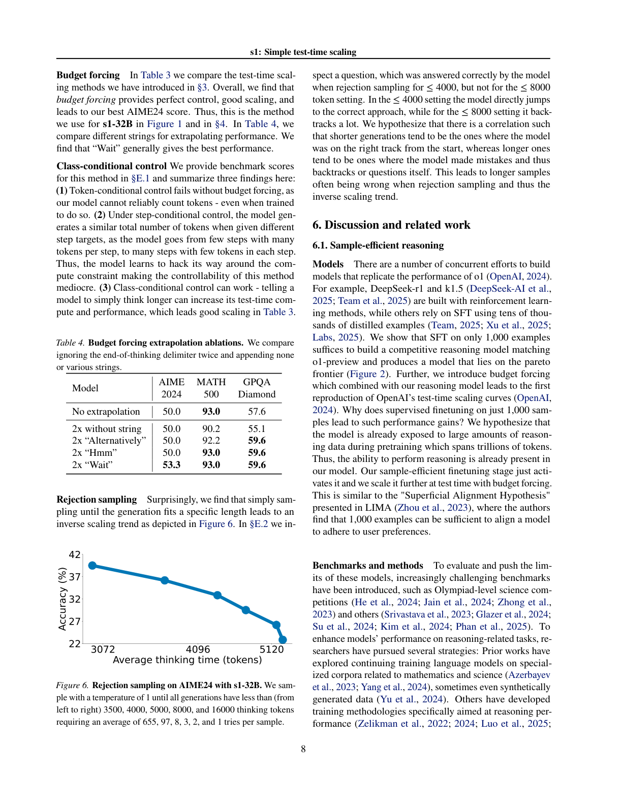
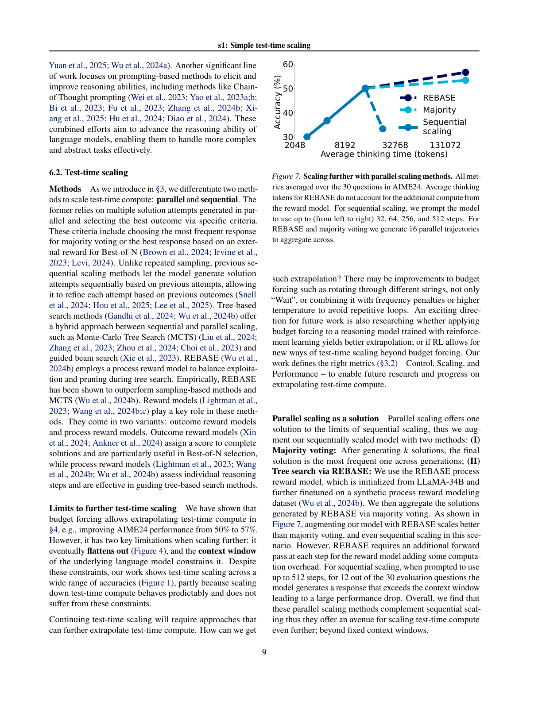

仅用 1000 条样本微调 + 预算强制（budget forcing），实现类 o1 的测试时扩展
测试时扩展（test-time scaling）是一种有前景的语言建模新方法，它利用额外的测试时计算来提升性能。近期 OpenAI 的 o1 模型展示了这一能力，但未公开其方法，引发了大量复现尝试。我们追求实现测试时扩展与强推理性能的最简方法。首先，我们整理出一个小型数据集 s1K——1000 道配有推理轨迹的问题，依据我们通过消融验证的三条准则：难度（difficulty）、多样性（diversity）与质量（quality）。其次，我们提出预算强制（budget forcing），通过强制终止模型的思考过程，或在其试图结束时多次追加 "Wait" 来延长思考，以此控制测试时计算。这能促使模型重新审视答案，常能修正错误的推理步骤。
在用 s1K 对 Qwen2.5-32B-Instruct 进行监督微调并配备预算强制后，我们的模型 s1-32B 在竞赛数学题（MATH 与 AIME24）上超越 o1-preview 达 27%。进一步，用预算强制对 s1-32B 进行扩展，可在无测试时干预的情况下外推其性能：在 AIME24 上从 50% 提升到 57%。我们的模型、数据与代码均开源：https://github.com/simplescaling/s1。
过去几年语言模型的性能提升，很大程度上依赖用大规模自监督预训练扩展训练时计算。这些强大模型的诞生，为建立在其之上的新扩展范式——测试时扩展——奠定了基础。该方法的目标是在测试时增加计算以获得更好结果。已有大量工作探索这一思想，而 OpenAI o1 近期验证了该范式的可行性：o1 以随测试时计算扩展一贯提升的强推理性能，展示了其能力。OpenAI 将其方法描述为使用大规模强化学习（RL），暗示使用了海量数据。这引发了各种依赖 MCTS、多智能体等技术的复现尝试。其中 DeepSeek R1 成功复现了 o1 级性能，同样通过数百万样本与多训练阶段的 RL。然而，尽管大量 o1 复现尝试，尚无一个公开复现出清晰的测试时扩展行为。

因此我们要问：实现测试时扩展与强推理性能的最简方法是什么？我们展示了：仅用 1000 个样本进行下一 token 预测训练，并通过我们称为预算强制的简单测试时技术控制思考时长，就能得到一个随测试时计算增加而扩展性能的强推理模型。具体而言，我们构建 s1K——1000 道精心筛选、配有从 Gemini Thinking Experimental 蒸馏出的推理轨迹与答案的问题。我们对一个现成的预训练模型进行有监督微调（SFT），仅需 16 块 H100 GPU 上 26 分钟训练。训练后，我们用预算强制控制模型花费的测试时计算：(I) 若模型生成的思考 token 超过期望上限，我们追加结束思考的 token 定界符强制结束，使其转入答案生成；(II) 若要模型花费更多测试时计算，我们抑制结束思考 token 定界符的生成，改为在模型当前推理轨迹后追加 "Wait" 以鼓励更多探索。
配备这一简单配方（在 1000 样本上 SFT + 测试时预算强制）后，我们的 s1-32B 展现出测试时扩展（图 1），且是样本效率最高的推理模型，超越 OpenAI o1-preview 等闭源模型（图 2）。我们的消融实验表明：将数据选择的三条准则（难度、多样性、质量）结合至关重要；随机选取、选最长轨迹或仅选最多样样本都会导致显著更差性能（AIME24 平均约 −30%）；在全部 59K 样本池上训练并不比 1K 选择带来实质增益。
我们的贡献：(1) 提出创建样本高效推理数据集（§2）与测试时扩展（§3）的简法；(2) 据此构建与 o1-preview 竞争的 s1-32B（§4）；(3) 对数据（§5.1）与测试时扩展（§5.2）的细微之处作消融；(4) 以讨论收尾激励未来简单推理研究（§6）。
我们遵循三条指导原则，从 16 个来源收集初始 59,029 道题：质量——数据集应高质量，我们始终检查样本并忽略格式糟糕者；难度——应具挑战性、需要显著推理努力；多样性——应来自不同领域以覆盖不同推理任务。我们收集两类数据集：
对每道题，我们用 Google Gemini Flash Thinking API 生成推理轨迹与解，得到 59K 个「问题—推理轨迹—解」三元组。我们针对评估题（MATH500、GPQA Diamond、AIME24）做 8-gram 去污染与去重。
我们经过三个阶段筛选，到达最小 1000 样本集，仍依据质量、难度、多样性三原则。先过滤 API 错误样本（剩 54,116），再过滤含格式问题的低质量样本（ASCII 图、不存在的图片引用、题号不一致等，剩 51,581）。

难度（Difficulty）。 用两个指标：模型性能与推理轨迹长度。我们用 Qwen2.5-7B-Instruct 与 Qwen2.5-32B-Instruct 评估每题，由 Claude 3.5 Sonnet 对照参考答案判分；用 Qwen2.5 tokenizer 测推理轨迹 token 长度作为难度代理（假设更难的问题需要更多思考 token）。我们移除两个模型都能正确解的题（可能过易），样本降至 24,496。
多样性（Diversity）。 用 Claude 3.5 Sonnet 依据美国数学会 MSC 分类系统将问题归入领域。我们从 24,496 题池中：先均匀随机选一个领域，再按「偏向更长推理轨迹」的分布从中采样一题，重复至得到覆盖 50 个领域的 1000 个样本。消融（§5.1）显示三条准则结合很重要；部分蒸馏生成不正确，我们允许其存在，因为我们关注捕捉推理过程而非完全正确的解（评分显示 s1K 中 53.6% 正确）。
我们将测试时扩展方法分为两类：(1) 顺序（Sequential）——后续计算依赖先前结果（如长推理轨迹）；(2) 并行（Parallel）——计算相互独立（如多数投票）。我们聚焦顺序扩展，因其能基于中间结果深化推理与迭代精炼。我们提出新的顺序扩展方法及评测方式。
预算强制（Budget forcing）。 我们提出一个简单的解码时干预，强制思考 token 的最大和/或最小数量：为强制上限，直接追加结束思考 token 定界符（及可选 "Final Answer:"）提前退出思考阶段；为强制下限，抑制结束思考 token 定界符的生成，并可选追加 "Wait" 鼓励模型反思当前生成。

基线。 我们将预算强制与以下比较：(I) 条件长度控制——在提示中告知模型应生成多长，分 token 条件控制、步骤条件控制、类别条件控制；(II) 拒绝采样（rejection sampling）——采样直到生成符合预定计算预算。
我们建立一组期望性质作为评测指标，不仅关心准确率，也关心可控性与扩展斜率。对每个方法，我们在固定基准上改变测试时计算，得到以思考 token 为 x 轴、准确率为 y 轴的分段线性函数 $f$（图 1 中 AIME24 最右点对应 $f(7320)=57\%$）。我们度量三个指标：
Control 衡量方法对测试时计算使用的可控程度（100% 为完美控制）；Scaling 为该分段线性函数的平均斜率，须为正且越大越好；Performance 为方法在基准上达到的最大性能。
训练： 用 s1K 对 Qwen2.5-32B-Instruct 做 SFT 得到 s1-32B，16 块 NVIDIA H100 上用 PyTorch FSDP 仅需 26 分钟。评估： 选三个代表性推理基准——AIME24（30 道 2024 美国数学邀请赛题，答案为 000–999 整数）、MATH500（难度各异的竞赛数学题）、GPQA Diamond（198 道博士级科学题，涵盖生物/化学/物理）。除非特别说明，温度 0（贪心）测准确率（pass@1）。

测试时扩展。 图 1 显示 s1-32B 随更多测试时计算而扩展；图 4(左) 显示预算强制在约 6 倍时最终趋平（过度抑制结束 token 会让模型陷入重复循环）。图 4(右) 表明，对基础模型用多数投票扩展测试时计算无法赶上 s1-32B，验证了顺序扩展优于并行的直觉。
样本效率。 图 2(右) 与表 1 显示 s1-32B 是最高效的开放数据推理模型，仅多训 1000 样本就显著超越基础模型；r1-32B 虽更强但用了 800× 的样本；s1-32B 在 AIME24 上几乎追平其蒸馏来源 Gemini 2.0 Thinking，说明蒸馏流程有效。
我们检验三条准则结合的重要性：仅质量（1K-random，随机选 1000）在所有基准上远差于 s1K；仅多样性（1K-diverse，跨领域均匀采样）同样差；仅难度（1K-longest，选最长轨迹 1000）显著提升 GPQA 但仍不及 s1K；最大化数量（59K-full，训练全部 59K）模型强但耗资源多（需 394 H100 GPU 小时，s1-32B 仅 7 小时）。综合质量、难度、多样性是关键。
表 3 在 AIME24 上消融扩展方法：预算强制（BF）取得 100% Control、Scaling 15、Performance 56.7；各类条件控制（TCC/SCC/CCC）或拒绝采样（RS）在控制、扩展斜率或性能上均不及 BF。表 4 进一步比较预算强制外推所用字符串，发现 "Wait" 通常给出最佳性能（AIME24 从 50.0 提升到 53.3）。


已有多个并行工作复现 o1：DeepSeek-r1/k1.5 用 RL，另一些用数万蒸馏样本做 SFT。我们表明仅 1000 样本 SFT 足以构建匹敌 o1-preview 的模型，并位于帕累托前沿（图 2）；预算强制结合推理模型首次复现了 OpenAI 的测试时扩展曲线。为何仅 1000 样本 SFT 就能带来如此提升？我们假设模型预训练已接触海量推理数据，推理能力本就存在，样本高效的微调阶段只是「激活」它，并在测试时用预算强制进一步扩展——类似 LIMA 的「浅对齐假设」（1000 样本足以使模型对齐用户偏好）。
方法。 我们区分并行与顺序扩展：并行依赖多路独立尝试并据准则选优（多数投票、Best-of-N）；顺序扩展让模型基于先前尝试逐步精炼。树搜索方法（MCTS、引导 beam search、REBASE 等）介于两者之间，奖励模型（ORM/PRM）在其中起关键作用。
进一步测试时扩展的局限。 预算强制可外推测试时计算（AIME24 从 50% 到 57%），但有两个关键局限：最终趋平（图 4），且受底层语言模型上下文窗口约束。未来方向包括轮换不同字符串（不只 "Wait"）、结合频率惩罚或更高温度避免重复循环，或将预算强制用于 RL 训练的推理模型以获更好外推。

具备强推理能力的语言模型有潜力极大提升人类生产力，从辅助复杂决策到推动科学突破。然而近期推理进展（如 OpenAI o1、DeepSeek r1）缺乏透明度，限制了更广泛的研究进展。我们的工作旨在以完全开放的方式推进推理前沿，促进创新与协作，加速最终造福社会的进步。